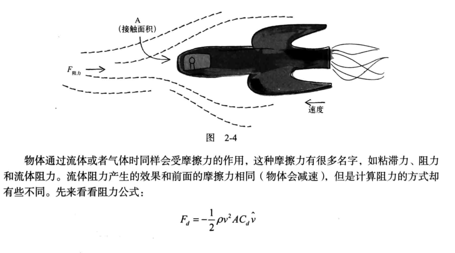
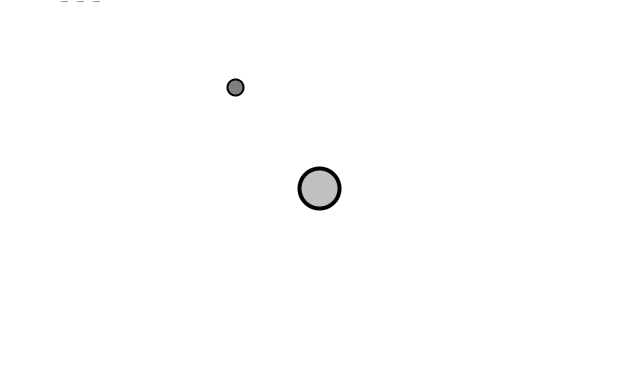
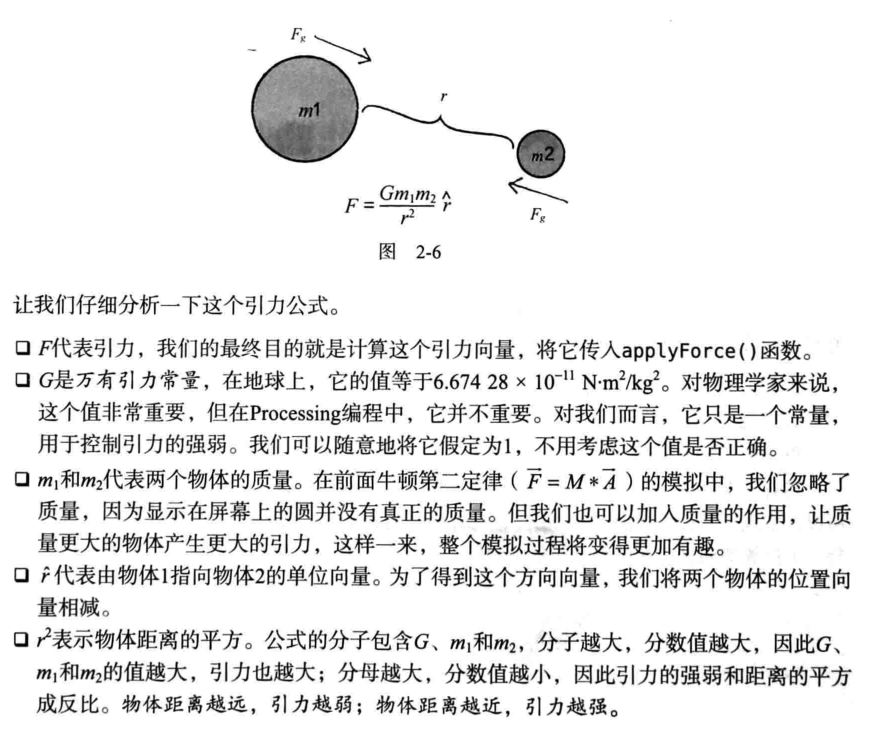

由于前几篇代码的篇幅过长，导致重点不突出，后面的内容会只给出关键代码，和解题思路，思考问题解决问题的方式才是最重要的，代码其实都可以下载得到
空气和流体阻力
实现效果

创建模型
下面从原理出发，从流体阻力出发

这个公式是怎么来的，我就不做解释了，这不是物理课，我们只是用代码模拟这个物理现象
用代码就可以这么表示
1
2
3
4
5
6
7
| float c = 0.1;
float pseed = v.mag()
float dragMagnitdude = c * speed * speed;
PVector drag = velocity.get();
drag.mult(-1);
drag.normalize();
drag.mult(dragMagnitdude);
|
上面是物体受到的阻力，下面来设计流体类
流体在屏幕上有坐标位置x、y，宽和高w、h,另外还应该有一个阻力系数，对比上面的c。于是流体就应该设计成这样的
1
2
3
4
5
6
7
8
9
10
11
12
13
14
15
16
17
18
19
20
21
22
23
24
25
26
27
28
29
30
| class Liquid{
float x,y,w,h;
float c;
Liquid(float x, float y, flaot w,flaot h, float c){
this.x = x;
this.y = y;
this.w = w;
this.h = h;
this.c = c;
}
void display(){
noStroke();
fill(275);
rect(x,y,w,h);
}
PVector drag(Mover mo){
float speed = m.velocity.mag();
float dragMagnitude = c * speed * speed;
PVector dragForce = m.velocity.get();
dragForce.mult(-1);
dragForce.normalize();
dragForce.mult(dragMagnitude);
return dragForce;
}
}
|
这样一个流体的设计基本完成，关于Mover类前面几节都已经讲过，基本都一样
代码实现
下面讲整个流体怎么用，这里主要讲setup()和main()方法
1
2
3
4
5
6
7
8
9
10
11
12
13
14
15
16
17
18
19
20
21
22
23
24
25
26
27
28
29
30
31
32
33
34
35
36
37
38
39
40
|
Mover[] movers = new Mover[5];
Liquid liquid;
void setup() {
size(450, 450);
liquid = new Liquid(0, height/2, width, height/2, 0.1);
}
void draw() {
background(255);
liquid.display();
for (int i = 0; i < movers.length; i++) {
if (liquid.contains(movers[i])) {
PVector dragForce = liquid.drag(movers[i]);
movers[i].applyForce(dragForce);
}
PVector gravity = new PVector(0, 0.1*movers[i].mass);
movers[i].applyForce(gravity);
movers[i].update();
movers[i].display();
movers[i].checkEdges();
}
fill(255);
if (frameCount % 20 == 0) saveFrame("ch2_05_####.png");
}
|
验证结果
略
总结
整体大概分为下面介个步骤
- 对物体受力分析，当然这一步已经省略了，已经把结论告诉大家了，我们简化了模型，只考虑重力和流体阻力
- 根据流体阻力的计算公式，用processing简化公式
- 用processing代码描述计算公式，计算流体阻力
- 设计流体对象
- 对物体应用流体阻力
万有引力
实现效果

创建模型
下面是万有引力公式，高中物理有学习过

关于引力问题，这里有如下的前提
- 我们至少有两个物体
- 这两个物体分别有一个向量location1和location2
- 每个物体都有质量mass1和mass2，在前面流体阻力我们忽略了质量，因为那不是重点，但是引力这里质量是重点
- G万有引力常量
最后我们把模型简化成两个质点之间的问题，质点的概念我们很早就接触了。
计算两个物体之间的向量可以简化成计算两个点之间的向量
例如计算鼠标与球之间的向量只需要把两个点之间的向量做减法就可以了，这在向量那一章讲过
1
| PVector dir = PVector.sub(mouse,location);
|
然而由万有引力公式我们知道我们需要的只是这个向量的方向，因为公式中的值都是标量除了位置坐标，而位置坐标是我们为了便于计算设计出来的模型，下面单位化向量
由前面的章节我们已经有了一个Mover实体类，现在我们需要至少两个实体，所以我们还需要再引入一个物体Attractor，这个物体应该是不会动的，至少是相对其他物体是不会动的
类比前面Mover的设计：
1
2
3
4
5
6
7
8
9
10
11
12
13
14
15
16
| class Attactor{
float mass;
PVector location;
Attactor(){
location = new PVector(width/2, height/2);
mass = 30;
}
void display(){
stroke(0);
fill(175,200);
ellipse(location.x,location.y,mass*2,mass*2);
}
}
|
基本模型已经创建完成了
代码实现
引力实现
在Attactor类中
1
2
3
4
5
6
7
8
9
10
| PVector attract(Mover m) {
PVector force = PVector.sub(position,m.position);
float d = force.mag();
d = constrain(d,5.0,25.0);
force.normalize();
float strength = (G * mass * m.mass) / (d * d);
force.mult(strength);
return force;
}
|
在main方法中的实现
1
2
3
4
5
6
7
8
9
10
11
12
13
14
15
16
17
18
| Mover m;
Attractor a;
void setup() {
size(640,360);
m = new Mover();
a = new Attractor();
}
void draw() {
background(255);
PVector force = a.attract(m);
m.applyForce(force);
m.update();
a.display();
m.display();
}
|
基本完成，这里只是实现两个个物体之间的引力，还有群体引力，就当是练习留给大家自己去完成吧
验证结果
略
总结
整个解决问题的思路流程和上面的基本一致，只不过在模型的创建方面调整了一下，后面的所有例子基本都采用这个流程